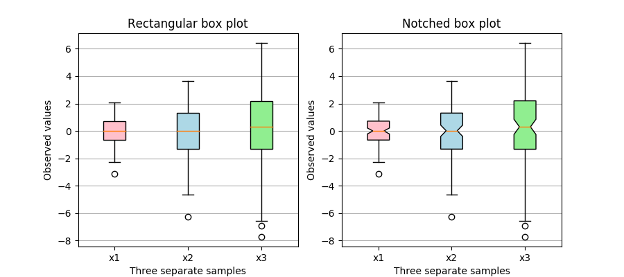

Version 3.1.2
Note
Click here to download the full example code
This plot illustrates how to create two types of box plots
(rectangular and notched), and how to fill them with custom
colors by accessing the properties of the artists of the
box plots. Additionally, the labels parameter is used to
provide x-tick labels for each sample.
A good general reference on boxplots and their history can be found here: http://vita.had.co.nz/papers/boxplots.pdf
import matplotlib.pyplot as plt
import numpy as np
# Random test data
np.random.seed(19680801)
all_data = [np.random.normal(0, std, size=100) for std in range(1, 4)]
labels = ['x1', 'x2', 'x3']
fig, axes = plt.subplots(nrows=1, ncols=2, figsize=(9, 4))
# rectangular box plot
bplot1 = axes[0].boxplot(all_data,
vert=True, # vertical box alignment
patch_artist=True, # fill with color
labels=labels) # will be used to label x-ticks
axes[0].set_title('Rectangular box plot')
# notch shape box plot
bplot2 = axes[1].boxplot(all_data,
notch=True, # notch shape
vert=True, # vertical box alignment
patch_artist=True, # fill with color
labels=labels) # will be used to label x-ticks
axes[1].set_title('Notched box plot')
# fill with colors
colors = ['pink', 'lightblue', 'lightgreen']
for bplot in (bplot1, bplot2):
for patch, color in zip(bplot['boxes'], colors):
patch.set_facecolor(color)
# adding horizontal grid lines
for ax in axes:
ax.yaxis.grid(True)
ax.set_xlabel('Three separate samples')
ax.set_ylabel('Observed values')
plt.show()
Keywords: matplotlib code example, codex, python plot, pyplot Gallery generated by Sphinx-Gallery